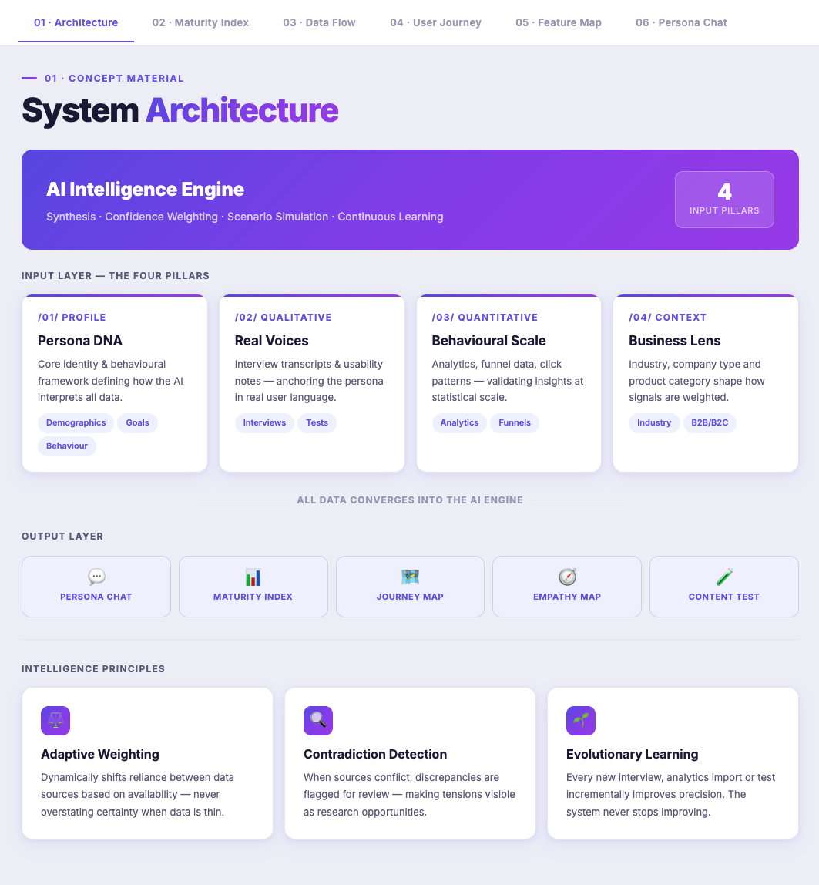
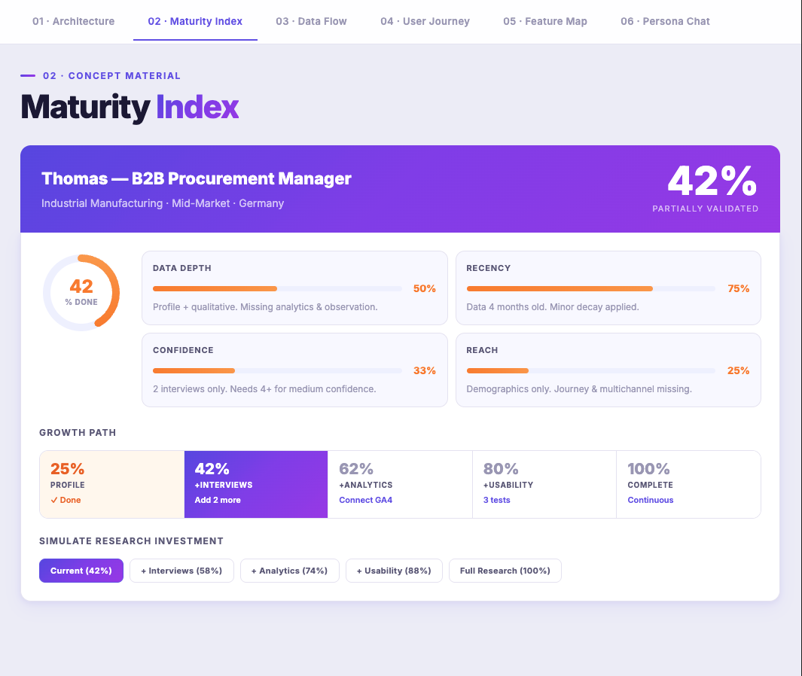
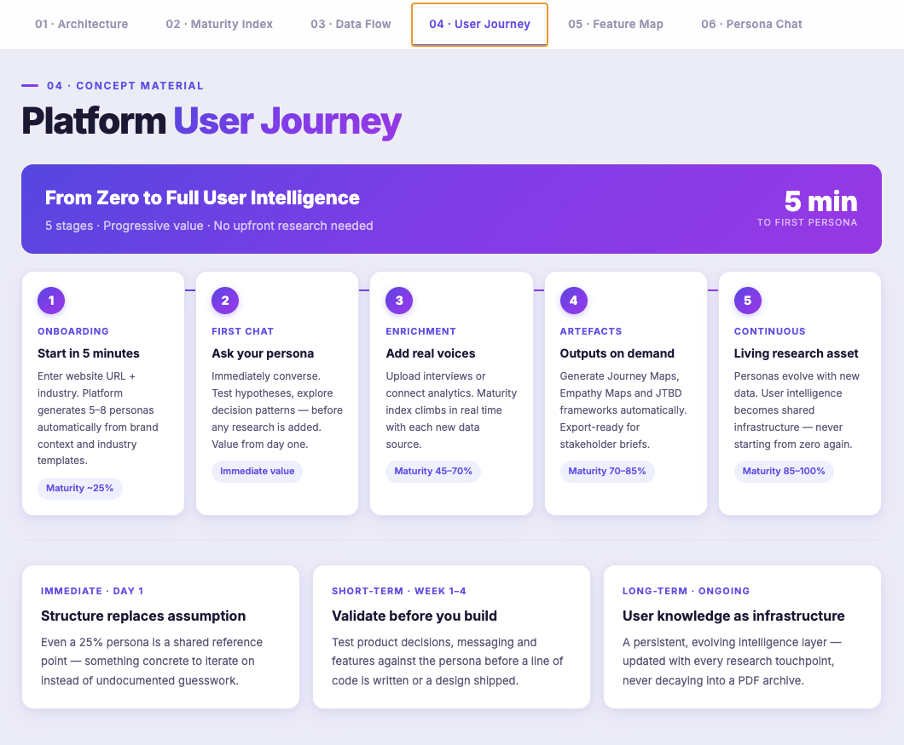
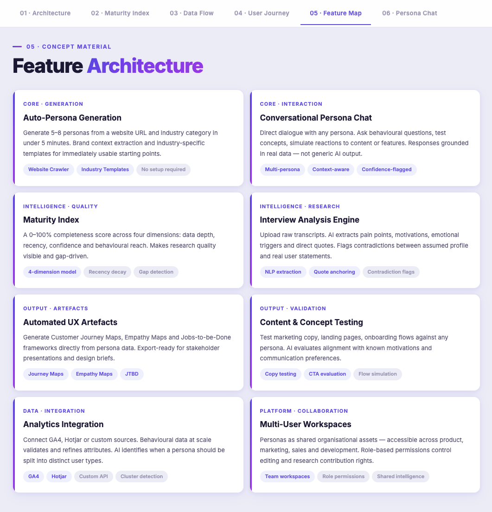

From static personas to living AI research companions. A concept.
Personas are powerful but most die in a shared drive. The User Intelligence Platform replaces frozen PDF documents with interactive, data-driven personas teams can actually talk to: ask questions, test concepts, and watch them grow more precise with every interview and analytics import.
Personas are powerful. But they're broken.
Every UX team knows the ritual: weeks of workshops, a beautifully designed PDF, a launch presentation, and then nothing. The document lands in a shared drive, gets referenced once or twice, then the market shifts and the persona quietly becomes fiction.
The core issue is structural, not motivational. Traditional personas are static by nature. They capture a moment in time. They cannot respond to new data, cannot be questioned, do not learn, and are disconnected from the day-to-day decisions teams actually make.
The gap isn't in the data. It's in the dialogue.
Most organisations already have fragments of user knowledge scattered across their systems: analytics dashboards, customer interviews, support tickets, usability recordings, surveys. The problem isn't a lack of data. It's a lack of synthesis, accessibility, and interactivity.
So what if a persona could speak? Instead of reading a document about your user, you could have a conversation with them. Ask directly, test hypotheses in real time, watch how they respond to a new concept, a revised copy line, a restructured journey.
That single shift, from documentation to dialogue, is the foundational insight behind the platform.
Three shifts the platform enables.
Walk through the platform concept.
Six concept screens translate the strategy into a tangible product, from the intelligence engine to the live persona chat. Scroll to step through each.






An AI engine fed by four data pillars.
At the core sits an intelligence engine that synthesises four input layers: Persona DNA (the interpretive profile), Real Voices (qualitative depth), Behavioural Scale (quantitative validation), and the Business Lens (organisational context).
The same user data means different things in different contexts, so the engine weights signals adaptively, flags contradictions, and improves with every new input rather than overstating certainty when data is thin.
A 0–100% score that makes research quality visible.
How do you tell a CMO their personas are built on assumptions, without making them defensive? You make the gap concrete. The Maturity Index scores each persona across data depth, recency, confidence, and behavioural reach.
Seeing a persona at 42% triggers a fundamentally different response than “we could do more research.” It turns an abstract methodology argument into a practical question: what gets us from 42% to 80%?
Every research source raises the confidence.
A first-draft persona from brand signals alone is assumption-based (20–30%). Add interview transcripts and responses become voice-anchored (45–60%). Layer in analytics and it's behaviourally validated (65–80%). Usability tests push it to simulation-ready (85–100%).
Qualitative depth tells you why; quantitative breadth tells you how many and how often. The flow makes that progression measurable and honest.
Value on day one. Compounding from there.
Enter a website URL and industry, and the platform generates 5–8 personas in under five minutes. Converse immediately, value before any research is added. Then enrichment, automated artefacts, and a continuously living research asset.
The platform rewards investment incrementally rather than demanding a large upfront commitment before returning anything useful.
The full capability surface.
Auto-persona generation, conversational chat, the Maturity Index, an interview analysis engine, automated UX artefacts, content & concept testing, analytics integration and multi-user workspaces, organised across core, intelligence, output and platform layers.
Each capability is grounded in the same principle: responses come from real data, not a language model's generic assumptions.
Talk to your user, with evidence behind every word.
Ask the persona a direct question and get a contextually grounded answer. Every message carries a confidence indicator: high, medium or low, and cites whether it's validated across interviews or still assumption-based.
It's a research model, not a chatbot: it refuses confident responses when data is insufficient, and flags exactly which interview question would close the gap most efficiently.
What the platform enables.
Eight capabilities
Conversational Persona Chat
Ask behavioural questions, test concepts, simulate reactions. Responses grounded in real data — “Would you buy this at this price?” “Where would you drop off?”
Automated UX Artefacts
Journey Maps, Empathy Maps and Jobs-to-be-Done frameworks generated directly from persona data. Days of workshop facilitation become a starting point in minutes.
Confidence Scoring per Attribute
Every attribute carries a confidence indicator. Profile-only traits flag as low-confidence assumptions; multi-source traits as high-confidence insights. Radical transparency.
Interview Gap Detection
Based on the current profile and data, the platform suggests which interview questions would most efficiently close the remaining gaps, turning the index into a planning tool.
Website & Content Simulation
Test marketing copy, landing pages and onboarding flows against a persona. The AI evaluates alignment with known motivations, concerns and communication preferences.
Multi-User Workspaces
Personas as shared organisational assets, accessible across product, marketing, sales and development, with role-based permissions for editing and research contribution.
Principles that shaped every decision.
Transparency over confidence
Every persona is only as good as its data. Rather than presenting AI output as ground truth, the platform surfaces uncertainty explicitly. The maturity index and confidence scores are core, not add-ons.
Dialogue over documentation
This isn't a persona-builder with a “generate PDF” button at the end. Every feature is built around the idea that the most valuable thing you can do with a persona is ask it questions.
Progressive value delivery
Genuine value on day one. A basic profile, no research needed, that compounds with every interview, integration and test. Reward investment incrementally, don't demand it upfront.
Research as a growth mechanic
The value of research is made visible not through abstract argument but through measurable improvement. Every interview moves the index. the most honest demonstration of why research matters.
User intelligence as a shared resource.
Personas become organisational assets, not project deliverables.
Sanity-check feature decisions against real user data before a line of code is written.
Test messaging alignment with persona motivations before a campaign launches.
Understand which persona types are underserved by the current product.
Identify friction patterns before they become churn signals.